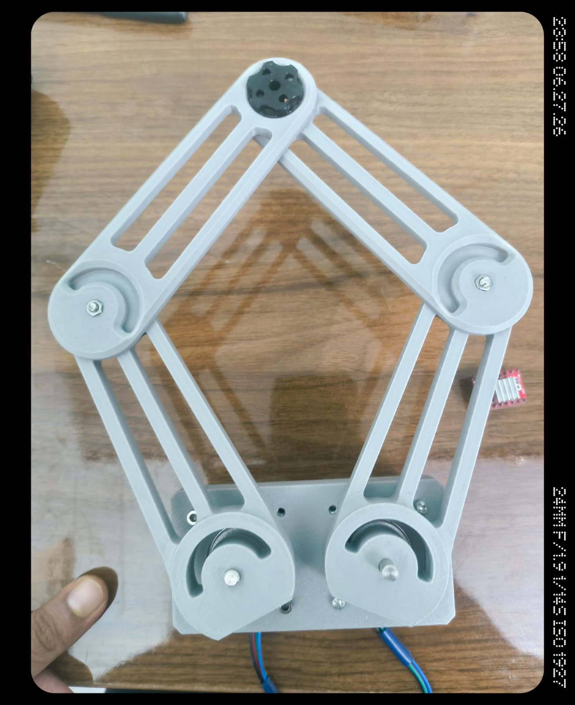
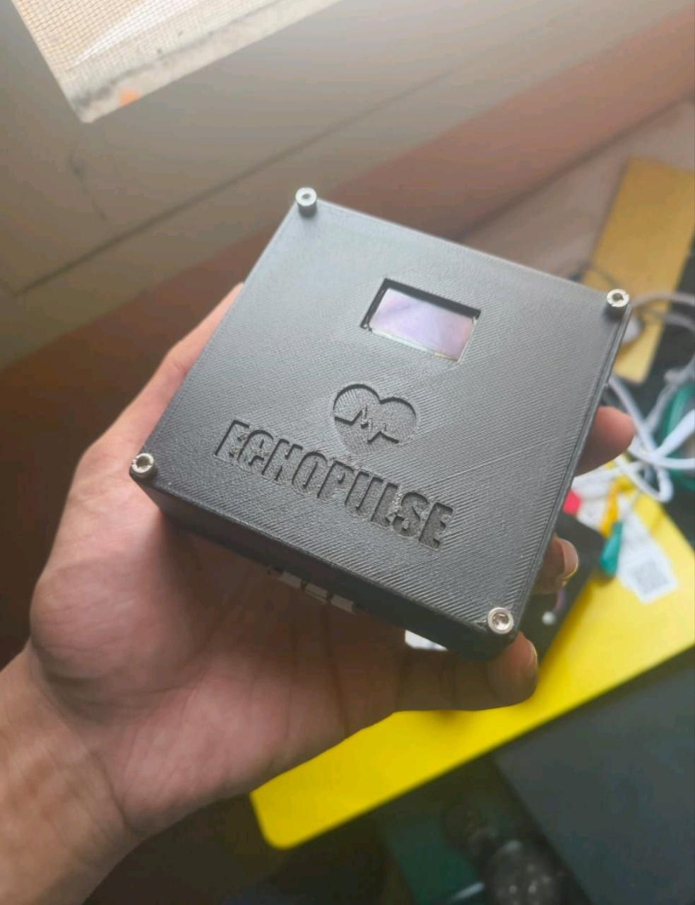

01
SCARA Robot — Motion Control
Cartesian X/Y motion control for a SCARA platform using inverse kinematics, stepper-based actuation and a defined workspace startup reference.
Robotics · Embedded Systems · Electronics · Mechanical Design
I’m an ECE undergraduate at Vellore Institute of Technology working at the intersection of electronics, mechanics and robotics. I design, print, wire, test and iterate physical systems.

01 / Projects
A growing archive of mechanisms, robots, electronics and prototypes. The emphasis is on the build process, not just the final object.

Cartesian X/Y motion control for a SCARA platform using inverse kinematics, stepper-based actuation and a defined workspace startup reference.

A three-finger bionic arm built for robotics experimentation and multiple hardware iterations.

Competition-focused robot integration covering sensors, control logic, motors and a compact platform.

A redesigned cycloidal actuator focused on CAD optimization, tolerance engineering, rigidity and assembly.
Compact PCB hardware for single-lead ECG and biopotential signal acquisition.

A healthcare device project exploring an electronics-based approach to a health-focused application.

A self-balancing robot exploring mobile robotics, mechanical construction and closed-loop control.

A fully 3D-printable speed-reduction concept aimed at easier, lower-cost robotics prototyping.
02 / Experience
Practical experience across robotics, additive manufacturing, operations and aerospace engineering environments.
Technical development across robotics, embedded systems, electronics and mechanical prototyping, including debugging, integration and hands-on workshop support.
Hands-on work with additive manufacturing, 3D printing workflows, prototyping and fabrication.
Operations internship in an urban-mining environment with exposure to operational processes and industrial workflows.
Internship experience in an engineering and aerospace R&D environment.
03 / About
I’m an Electronics and Communication Engineering undergraduate at Vellore Institute of Technology, interested in the space where electronics, mechanics and robotics meet.
My projects span robotic mechanisms, actuators, embedded systems, PCB design, 3D printing and control. I prefer building physical prototypes, testing them, finding what fails and iterating from there.
04 / Approach
Start with the mechanism, electronics and control problem before adding complexity.
Use CAD, 3D printing, breadboards and quick hardware tests to expose weak assumptions.
Measure what changed, identify failure modes and use the next version to improve the system.
05 / Contact
For robotics projects, hardware development, research opportunities, internships or collaborations.